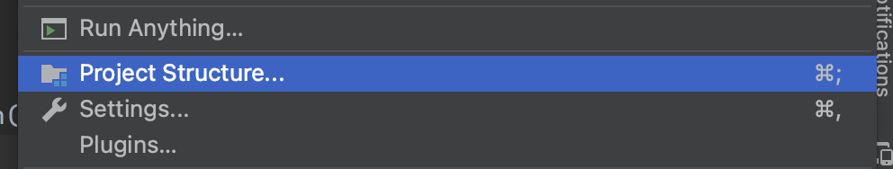
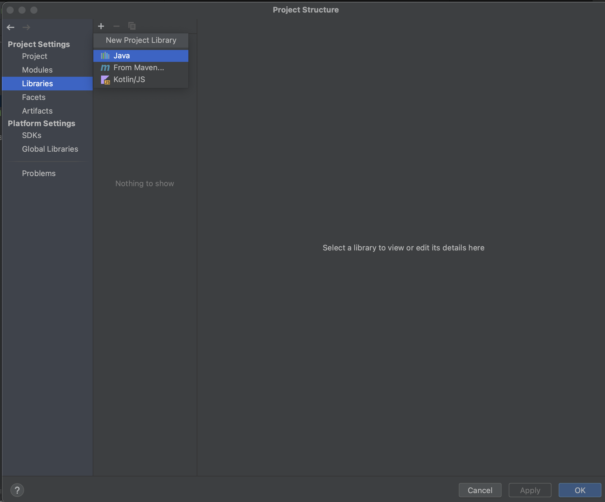
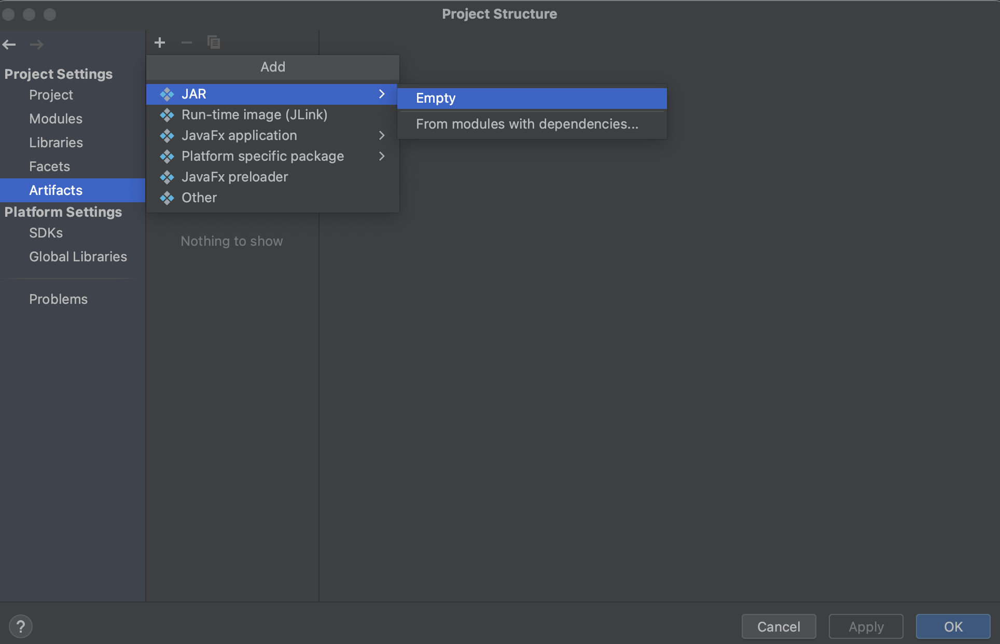

WaveAPI
WaveAPI is a Minecraft modding API designed to abstract the entirety of the game
Set Up
In the following chapter we will cover setting up your development environment.
WaveAPI mods need to build themselves against the API while also having wave.yml in it's resources and then the jar which you build can be just put into your mods folder together with WaveAPI, and it would work just fine as a mod.
Setting up your development environment to have waveAPI
Maven repository:
maven {
url "https://maven.waveapi.org"
}
Implementation:
implementation "org.waveapi:API:1.0-SNAPSHOT"
If you know what you are doing, be free to skip examples on how to set this up.
Here are some examples of how you can set up your build environment:
IntelliJ IDEA with gradle (Recommended):
- Create a new project using gradle as your build system. (Recommended that you disable sample code, but you can just delete it later on)

- Now that you have created your project you need to open
build.gradlefile and then add the maven repository for waveAPI to there. you can do that by pasting
inside ofmaven { url "https://maven.waveapi.org" }repositories {}next tomavenCentral().
Next you would want to actually include the library itself in your project, you can do that by addingimplementation "org.waveapi:API:1.0-SNAPSHOT"inside ofdependencies {} - Your final build.gradle should look something like:
plugins { id 'java' } group 'org.waveapi' version '1.0-SNAPSHOT' repositories { maven { url "https://maven.waveapi.org" } } dependencies { implementation "org.waveapi:API:1.0-SNAPSHOT" } - You are done now and can go onto the next chapter however you might want to make building your jar send it straight to your mod folder.
- For that you can add the following piece of code to your build.gradle
def dir = getProperties().get('dir') task copyJar(type: Copy) { from jar into dir } - Next you want to edit your run configuration.

- Next you want to add a new run configuration and in run write
copyJar -Pdir=path/to/your/mods/folderreplacingpath/to/your/mods/folderwith a path to your mod folder:


- And now when you run that run configuration it will automatically copy the jar to your mods folder!
IntelliJ IDEA without gradle or maven (not recommended):
- Create a new project using IntelliJ as your build system. (Recommended that you disable sample code, but you can just delete it later on)

- Download the API jar from https://maven.waveapi.org. you will have to go to https://maven.waveapi.org/org/waveapi/API/, find the most recent version and then find the most recent jar file there.


- Now place that jar somewhere where you won't move it, you can place it in the folder with your super cool mod (you are also free to rename the API jar).
- Now go into your super cool mod's project structure 
- And add the API jar as a library 
- Next you want to create ability to export your mod as artifact, first create a new empty jar artifact and then drag "'(your mod's name)' compiled output" into the jar file. It is also recommended that you change your artifacts location to your mods folder



- Now you can build your mod by pressing Build -> Build Artifacts -> Your artifact. Which is slow and not ideal, but it does work.
Hello, Minecraft!
Now that you have created your project it is time to actually make it function as a mod.
First if you have any in src/main/java delete it. Next you want to create your mod's main file.
For that create a new java in src/main/java file e.g. myname.coolmod.CoolMod.
That file should extend WaveMod. Here is an example of a main mod file.
If you are using InteliJ build system then for you both src/main/java and src/main/resources will be in src
public class CoolMod extends WaveMod {
private static CoolMod instance;
public static Logger log;
public CoolMod() {
super("very_cool_mod", "1.0");
instance = this;
log = new Logger(this);
}
@Override
public void init() {
log.log("Hello, Minecraft!");
}
public static WaveMod getInstance() {
return instance;
}
}
You don't have to create instance variable and set it, but it is recommended you do that because you will need it later on.
Neither do you have to create a new Logger for your mod, but it is advised over using System.out.println() to use Logger#log().
Next step is to create wave.yml file inside your resources folder that will contain:
main: path.to.MainClass
Now you are free to build your mod and run Minecraft.
and you should see Hello, Minecraft! somewhere inside your log.
That's it for the setup, no need for obfuscation, just a very plain gradle project!
Items
In the following chapters we will cover how to create an item and what you can do with them.
Creating an item
It is recommended that to create an item you create a new java file for every item.
public class CoolItem extends WaveItem {
public CoolItem() {
super("my_cool_item", CoolMod.getInstance());
}
}
This 5 lines of code is enough to create an untextured item however no one wants an untextured item called item.cool_mod.my_cool_item so let's add a texture and a en_us name to it. We will use the following image as the texture
by dragging it into a folder in the resource folder called cool_mod/ and naming it cool_item.png so that I had a resource cool_mod/cool_item.png.
Next I need to signify that in the code by adding the following line in the item's constructor
setModel(new SimpleItemModel("cool_mod/cool_item.png"));
so the code for our item will look like:
public class CoolItem extends WaveItem {
public CoolItem() {
super("my_cool_item", CoolMod.getInstance());
setModel(new SimpleItemModel("cool_mod/cool_item.png"));
}
}
In this case setModel() takes in an ItemModel and as the ItemModel we give it a new instance of SimpleItemModel which we create from our item texture png file.
Next we want to add en_us translation to our file.
We can add it using
addTranslation("en_us", "My Super Cool Item");
so the final code will look like:
public class CoolItem extends WaveItem {
public CoolItem() {
super("my_cool_item", CoolMod.getInstance());
setModel(new SimpleItemModel("cool_mod/cool_item.png"));
addTranslation("en_us", "My Super Cool Item");
}
}
Now the only thing left is to create a new instance of CoolItem. We can do that by just creating a new instance of the item in the our mod's init() method, so it would look something like:
@Override
public void init() {
log.log("Hello, Minecraft!");
new CoolItem();
}
alternatively we can also register a new item without actually creating a file for it using:
new WaveItem("another_item", this)
.setModel(new SimpleItemModel("cool_mod/another_item.png"))
.addTranslation("en_us", "Another Item");
You can use that if you are just trying to register some resource item however 1 file per item is the recommended approach.
Now if we launch the game we should see that we can now give those items to ourselves using /give